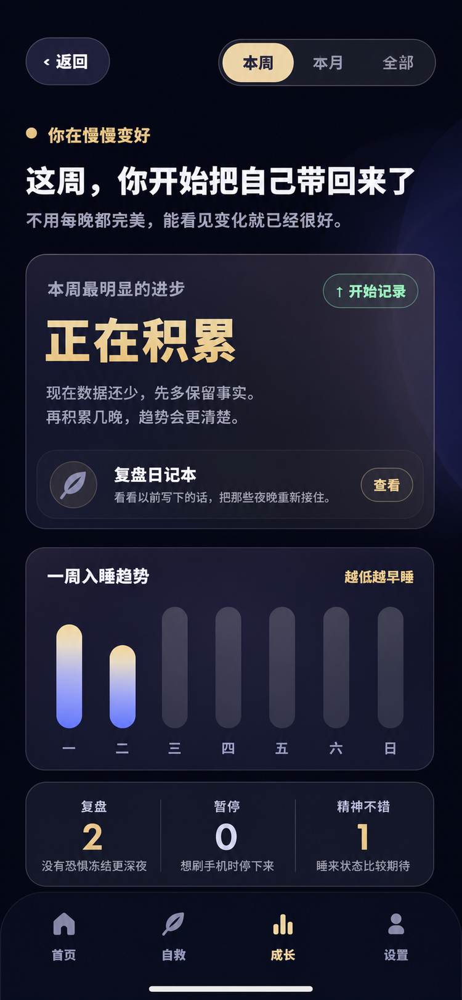
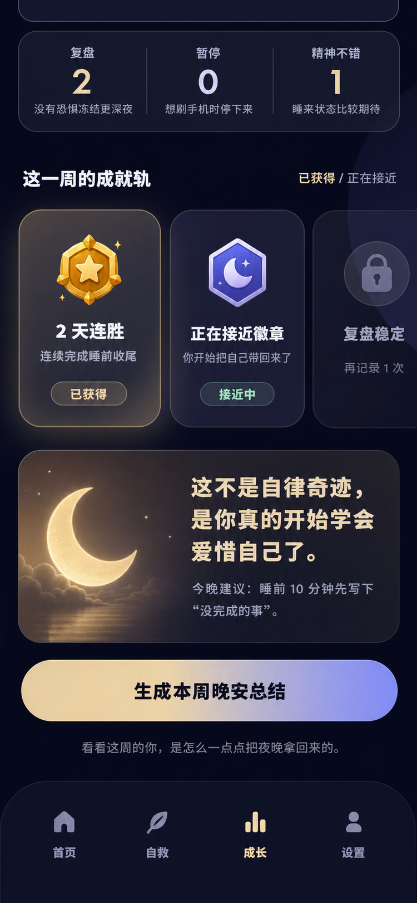
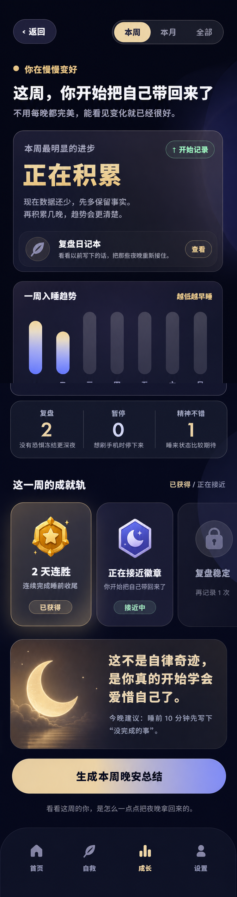
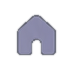
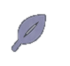
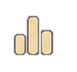

source/growth-week-top-source-750.png

源图按统一比例归一化到 750px 宽；切图资源来自本次两张截图，manifest 位于 assets/generated/yueban-growth-ui/layers.manifest.json。
source/growth-week-top-source-750.png

source/growth-week-bottom-source-750.png

source/growth-week-stitch-source-750.png

icon-growth-journal-leaf-01.pngillustration-growth-streak-badge-01.pngillustration-growth-moon-badge-01.pngicon-growth-locked-badge-01.pngicon-growth-bottom-nav-home-01.png
icon-growth-bottom-nav-rescue-01.png
icon-growth-bottom-nav-growth-active-01.png
icon-growth-bottom-nav-settings-01.pngimage-growth-advice-card-full-01.pngimage-growth-advice-moon-scene-01.pngqa/bbox-preview-top-bitmap.png、qa/bbox-preview-bottom-bitmap.png、qa/transparent-assets-preview.png、qa/restoration-report.md